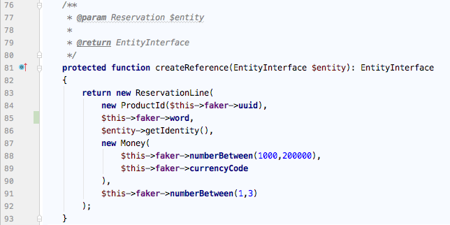

Development Process (App und Aggregate Generierung)
Generieren der Model-Json-Files
Das in Schritt 1 installierte Plugin kann in MW unter "Tools -> Utilities -> Business-Model-Json-Generator" ausgeführt werden. Der Speicherort der Dateien kann x-beliebig sein.
Das bumo-Script, welches die PHP-Klassen, App und Aufbau-Logik generiert, kann nun auf die Json-Dateien angewandt werden.
Allgemeines
Anzeige der Hilfe
./bumo help
Auflistung der vorhandenen, einzel ausführbaren Commands
./bumo list
App erzeugen
./bumo app:init appname
oder die Kurzform
./bumo a:i appname
Aggregate erzeugen
./bumo app:generate-aggregate appname aggregate
oder in Kurzform
./bumo a:g appname aggregate
Letzteres kann mit der -f oder --file Option so ausgeführt werden das man den Ort der Json Dateien als Pfad angeben kann, wenn man die BU-Json-Dateien nicht im Projektverzeichnis unter apps/appname/setup/defs abgespeichert hat, was der Standard Suchpfad ist bei Angabe von Option --f ohne Pfad. Allgemeiner Standardpfad ist getcwd. Wenn die App jedoch noch nicht existiert, kann sie zum einem über den init Befehl angelegt werden, muss jedoch nicht da auch der Generate-Befehl das Projektverzeichnis anlegt.
Bsp.:
./bumo a:g task Task
Alle Commands sind einzeln ausführbar, man kann also z.B. nur die Handler neu generieren lassen mit dem Befehl:
./bumo command:handler task Task
Empfohlenes Vorgehen
Im Verzeichnis dev/workbench_plugins liegt eine Example.json welche für den Guide hier Verwendung findet
Vorab (Globalen Link für codeception setzen, um es von jedem Verzeichnis ausführen zu können):
ln -s PROJECT_ROOT/vendor/bin/codecept /usr/local/bin/codecept
1) App erzeugen (Dadurch wird das Testverzeichnis gebootstrapped und die App wird in der Datenbank registriert)
./bumo a:i example2) Aggregate generieren
./bumo a:g example Example -f ./workbench_plugins3) Erzeugen der Datenbanktabelle Vorab Ausführungssql ansehen (wird noch nichts erzeugt)
./bumo schema create example --dumpErzeugen
./bumo schema create example4) Testausführen (Erzeugen eines Examples)
cd PROJECT_ROOT
codecept run api -c apps/example/tests
Wenn der Test positiv ist, existiert nun ein Objekt in der Datenbank. Es wurde erfolgreich erstellt und wieder ausgelesen.
Aktualisierung
1) Aggregate regenerieren
./bumo a:g example Example -f ./workbench_plugins2) Änderung Mergen
Unter dev/.appsdock existiert jetzt ein Verzeichniss mit dem Aggregatenamen "example", worin einmal eine Patch-Datei und die veränderte Code-Datei dafür liegen, letztere in PHP-Storm auswählen und mit "Compare with..." mit der Originalen vergleichen und manuell mergen.
3) Aktualisierung der Datenbanktabelle Vorab Ausführungssql ansehen (wird noch nichts erzeugt)
./bumo schema update example --dumpAktualisieren
./bumo schema update example4) Testausführen (Erzeugen eines Examples)
cd PROJECT_ROOT
codecept run api -c apps/example/tests
Wenn der Test positiv ist, existiert nun ein Objekt in der Datenbank. Es wurde erfolgreich erstellt und wieder ausgelesen.
Datenbanktabelle seeden
1) Fixture anlegen
Im Ordner tests/Fixture (wenn nicht vorhanden anlegen) eine Klasse erstellen mit der Namenskonvention "AggregateFixture" und diese von BaseFixture erben lassen.
2) Seeden
./bumo db:seed example Example
Komplexeres Beispiel mit Reference:

Stubs Generierung
1) Subs generieren
./bumo stub:generate path outpath
Appsdock Console nutzen (schnelle Überprüfung von Funktionen,History,Autocomplete)
1) Console starten
Alle Klassen werden direkt ohne Namespace in die Consolensession geladen und sämtliche Operationen können darauf ausgeführt werden.
./bumo vsh
In dem Beispiel, wurde einfach das ValueObject TravelDates aus der Parking App mit 'new' erzeugt und eine Get-Funktion darauf ausgeführt.
Datenbank Yaml-Dateien generieren
1) Yaml generieren
Die Yaml-Dateien findet man dann im apps/example/setup/db Verzeichnis.
./bumo db:yml example Example
Troubleshoots
Bekannte Fehlerfälle:
1) Schema update: MysqlPlatform wird nicht unterstützt, damit auch für Mysql das Schema aktualisiert werden kann, muss in Doctrine in der Klasse SchemaTool Zeile 357 auskommentiert werden.
2) Identity.xml ValueObject definition not found Hotfix: bei dem sich handelten Aggregate, eine Fake xml Datei (AggregateId.xml) in dem orm xml VO Verzeichniss erstellen. Dabei den Dateinamen natürlich ersetzen mit dem aus der Fehlermeldung.